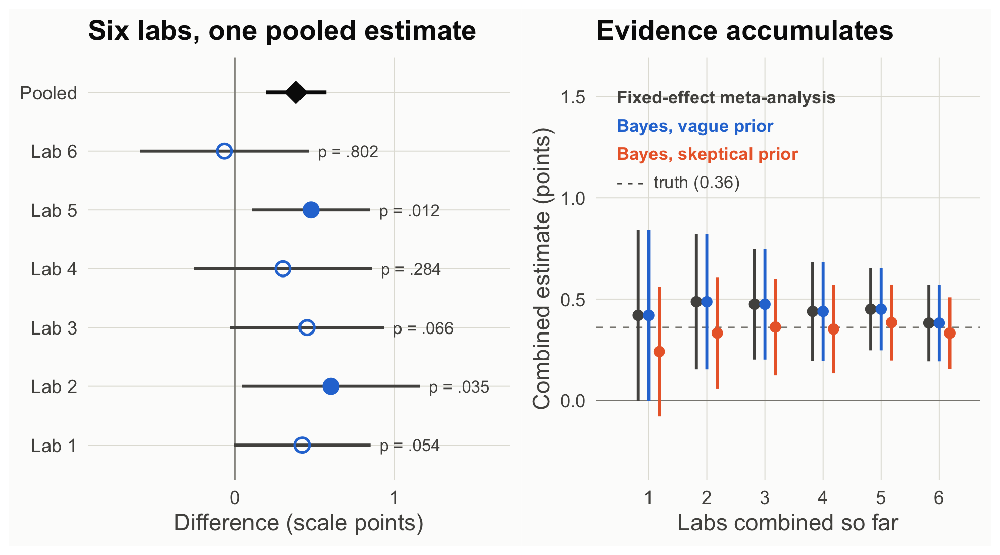

Vote counting: tallying how many studies were significant. It ignores effect sizes and precision, and with modest power it will often report “mixed results” for a real effect.
Fixed-effect meta-analysis: a weighted average of the study estimates, with weights of 1 / SE², so more precise studies count more. It assumes every lab estimates the same true effect. When labs’ true effects differ, a random-effects model estimates that variation too.
Sequential updating: with normal approximations, each lab’s posterior (a mean and an SD) becomes the prior for the next lab.
Counting significant results (“vote counting”) says 2 of 6. Combining the evidence says something else. Two ways to combine:
Fixed-effect meta-analysis (frequentist): weight each lab by 1 / SE² and average.
Sequential Bayesian updating: start from a prior, update with lab 1, and let yesterday’s posterior be today’s prior (Etz & Vandekerckhove, 2018) for lab 2, and so on.
cumulate <-function(prior_mean, prior_sd) { m <- prior_mean; s <- prior_sd; out <-NULLfor (k inseq_len(nrow(lab_stats))) { u <-update_normal(m, s, lab_stats$diff[k], lab_stats$se[k]); m <- u[["mean"]]; s <- u[["sd"]] out <-rbind(out, data.frame(after_lab = k, mean = m, lo = m -1.96* s, hi = m +1.96* s,p_pos =pnorm(0, m, s, lower.tail =FALSE))) } out}fe <-do.call(rbind, lapply(seq_len(nrow(lab_stats)), function(k) { w <-1/ lab_stats$se[1:k]^2; m <-sum(w * lab_stats$diff[1:k]) /sum(w); se <-sqrt(1/sum(w))data.frame(after_lab = k, mean = m, lo = m -1.96* se, hi = m +1.96* se, p =2*pnorm(-abs(m / se)))}))vague <-cumulate(0, 10)skept <-cumulate(0, 0.25)knitr::kable(data.frame(Method =c("Fixed-effect meta-analysis", "Bayes, vague prior N(0, 10)", "Bayes, skeptical prior N(0, 0.25)"),Estimate =sprintf("%.3f", c(fe$mean[6], vague$mean[6], skept$mean[6])),`95% interval`=sprintf("[%.3f, %.3f]", c(fe$lo[6], vague$lo[6], skept$lo[6]), c(fe$hi[6], vague$hi[6], skept$hi[6])),`p or P(effect > 0)`=c(ifelse(fe$p[6] < .001, "p < .001", sprintf("p = %s", fmt_p(fe$p[6]))), sprintf("%.4f", vague$p_pos[6]), sprintf("%.4f", skept$p_pos[6])),check.names =FALSE), align ="lccc")
Method
Estimate
95% interval
p or P(effect > 0)
Fixed-effect meta-analysis
0.382
[0.193, 0.571]
p < .001
Bayes, vague prior N(0, 10)
0.382
[0.193, 0.571]
1.0000
Bayes, skeptical prior N(0, 0.25)
0.332
[0.156, 0.509]
0.9999
Code
fp <- lab_stats; fp$lab_f <-factor(paste("Lab", fp$lab), levels =rev(c(paste("Lab", 1:6), "Pooled")))fp$sig <-ifelse(fp$p < .05, "p < .05", "p ≥ .05")pool <-data.frame(lab_f =factor("Pooled", levels =levels(fp$lab_f)), est = fe$mean[6], lo = fe$lo[6], hi = fe$hi[6])pF <-ggplot(fp, aes(y = lab_f)) +geom_vline(xintercept =0, color = pal[["gray"]], linewidth =0.4) +geom_errorbarh(aes(xmin = lo, xmax = hi), height =0, linewidth =0.9, color = pal[["ink2"]]) +geom_point(aes(x = diff, shape = sig), size =3.6, color = pal[["blue"]], fill = pal[["blue"]], stroke =1.2) +geom_text(aes(x = hi, label =sprintf("p = %s", fmt_p(p))), hjust =-0.15, size =3.8, color = pal[["ink2"]]) +geom_errorbarh(data = pool, aes(xmin = lo, xmax = hi), height =0, linewidth =1.2, color = pal[["ink"]]) +geom_point(data = pool, aes(x = est), shape =23, size =5, fill = pal[["ink"]], color = pal[["ink"]]) +scale_shape_manual(values =c("p < .05"=21, "p ≥ .05"=1)) +coord_cartesian(xlim =c(-0.8, 1.6)) +labs(x ="Difference (scale points)", y =NULL, title ="Six labs, one pooled estimate") +theme_demo()acc <-rbind(transform(fe[, 1:4], how ="Fixed-effect meta-analysis", off =-0.18),transform(vague[, 1:4], how ="Bayes, vague prior", off =0),transform(skept[, 1:4], how ="Bayes, skeptical prior", off =0.18))acc$how <-factor(acc$how, levels =c("Fixed-effect meta-analysis", "Bayes, vague prior", "Bayes, skeptical prior"))accl <-data.frame(how =levels(acc$how), x =0.45, y =c(1.5, 1.36, 1.22))accl$how <-factor(accl$how, levels =levels(acc$how))pC <-ggplot(acc, aes(after_lab + off, mean, color = how)) +geom_hline(yintercept =0, color = pal[["gray"]], linewidth =0.4) +geom_hline(yintercept =0.36, color = pal[["gray"]], linetype ="dashed") +annotate("text", x =0.45, y =1.08, label ="- - - truth (0.36)", hjust =0, color = pal[["ink2"]], size =4) +geom_errorbar(aes(ymin = lo, ymax = hi), width =0, linewidth =0.9) +geom_point(size =2.8) +geom_text(data = accl, aes(x = x, y = y, label = how), hjust =0, size =4, fontface ="bold") +scale_color_manual(values =c("Fixed-effect meta-analysis"= pal[["ink2"]], "Bayes, vague prior"= pal[["blue"]],"Bayes, skeptical prior"= pal[["orange"]])) +scale_x_continuous(breaks =1:6) +coord_cartesian(ylim =c(-0.3, 1.6), xlim =c(0.4, 6.4)) +labs(x ="Labs combined so far", y ="Combined estimate (points)", title ="Evidence accumulates") +theme_demo()pF + pC +plot_layout(widths =c(1.1, 1))

Figure 1: Left: each lab’s estimate and 95% CI; filled points are p < .05, open points are not. The diamond is the fixed-effect pooled estimate. Right: the combined estimate after each lab, from a fixed-effect meta-analysis and from sequential Bayesian updating with a vague or skeptical prior.
How to read this figure
Left (a forest plot): each row is one lab’s estimated difference with its 95% CI. Filled dots reached p < .05; open dots did not. The black diamond is the pooled estimate from all six labs.
Most of the open-dot intervals include the pooled estimate: a nonsignificant lab is not evidence against the effect.
Right: the combined estimate as labs are added one at a time (1 = lab 1 alone; 6 = all six). Each color is one way of combining; the bars are 95% intervals. The dashed line is the true effect built into the simulation.
The gray (meta-analysis) and blue (vague-prior Bayes) results are the same numbers. The orange (skeptical-prior) results start lower and move toward them as data accumulate.
# One Bayes factor for all 610 participants (305 per group); reasonable here because the labs share one true effectbf_default(labs)
With a vague prior, sequential Bayesian updating reproduces the fixed-effect meta-analysis to the third decimal. The skeptical prior starts lower and moves toward the others as labs accumulate: the prior’s weight shrinks as data grow (Etz & Vandekerckhove, 2018, Example 4).
What each framework lets you say
Frequentist: “Pooling six labs, enjoyment was 0.38 points higher after the rewarded ending, 95% CI [0.19, 0.57].”
Bayesian: “After six labs, even a skeptic’s posterior probability that the effect is positive exceeds 99.9%.”
Neither: “Only two of six labs replicated the effect.” That sentence confuses the significance of each study with the evidence of all of them.
Theory-building takeaway. Theories are built across studies, not within one. Bayesian updating makes accumulation explicit, and meta-analysis does the same job with long-run guarantees. If labs differ in their true effects (the “for whom and where” question), the natural next step is a hierarchical model that estimates the variation itself.
Your turn
Drop lab 6 (the “failed” replication). How much does the pooled estimate move? What would a literature that only published labs 2 and 5 conclude?
Use lab 1’s posterior as the prior for Study 1’s n = 150 data. Is that legitimate here? What would make it illegitimate?
Source Code
---title: "Scene 4 · Six labs"subtitle: "How evidence accumulates"---```{r}#| label: setup#| include: falsesource("R/helpers.R")suppressPackageStartupMessages({library(BayesFactor)library(patchwork)})knitr::opts_chunk$set(fig.align ="center")```::: {.callout-important title="Predict first"}Six labs ran Study 1. Two found *p* < .05, three did not, and one estimate went the wrong direction. Did the effect replicate?:::```{r}#| label: s4-labslabs <-read.csv("data/story_labs.csv")lab_stats <-do.call(rbind, lapply(split(labs, labs$lab), function(d) { s <-two_group(d)data.frame(lab = d$lab[1], n = s$n1, diff = s$diff, se = s$se, lo = s$ci[1], hi = s$ci[2], p = s$p,bf10 =extractBF(bf_default(d))$bf)}))knitr::kable(transform(lab_stats, diff =round(diff, 2), se =round(se, 3), lo =round(lo, 2), hi =round(hi, 2),p =fmt_p(p), bf10 =fmt_bf(bf10)),col.names =c("Lab", "n / group", "Diff", "SE", "95% CI lo", "95% CI hi", "p", "BF10"))```::: {.callout-note collapse="true" title="Explainer: vote counting, fixed-effect meta-analysis, sequential updating"}- **Vote counting:** tallying how many studies were significant. It ignores effect sizes and precision, and with modest power it will often report "mixed results" for a real effect.- **Fixed-effect meta-analysis:** a weighted average of the study estimates, with weights of 1 / SE², so more precise studies count more. It assumes every lab estimates the same true effect. When labs' true effects differ, a **random-effects** model estimates that variation too.- **Sequential updating:** with normal approximations, each lab's posterior (a mean and an SD) becomes the prior for the next lab.:::Counting significant results ("vote counting") says 2 of 6. Combining the evidence says something else. Two ways to combine:- **Fixed-effect meta-analysis (frequentist):** weight each lab by 1 / SE² and average.- **Sequential Bayesian updating:** start from a prior, update with lab 1, and let *yesterday's posterior be today's prior* (Etz & Vandekerckhove, 2018) for lab 2, and so on.```{r}#| label: s4-accumulatecumulate <-function(prior_mean, prior_sd) { m <- prior_mean; s <- prior_sd; out <-NULLfor (k inseq_len(nrow(lab_stats))) { u <-update_normal(m, s, lab_stats$diff[k], lab_stats$se[k]); m <- u[["mean"]]; s <- u[["sd"]] out <-rbind(out, data.frame(after_lab = k, mean = m, lo = m -1.96* s, hi = m +1.96* s,p_pos =pnorm(0, m, s, lower.tail =FALSE))) } out}fe <-do.call(rbind, lapply(seq_len(nrow(lab_stats)), function(k) { w <-1/ lab_stats$se[1:k]^2; m <-sum(w * lab_stats$diff[1:k]) /sum(w); se <-sqrt(1/sum(w))data.frame(after_lab = k, mean = m, lo = m -1.96* se, hi = m +1.96* se, p =2*pnorm(-abs(m / se)))}))vague <-cumulate(0, 10)skept <-cumulate(0, 0.25)knitr::kable(data.frame(Method =c("Fixed-effect meta-analysis", "Bayes, vague prior N(0, 10)", "Bayes, skeptical prior N(0, 0.25)"),Estimate =sprintf("%.3f", c(fe$mean[6], vague$mean[6], skept$mean[6])),`95% interval`=sprintf("[%.3f, %.3f]", c(fe$lo[6], vague$lo[6], skept$lo[6]), c(fe$hi[6], vague$hi[6], skept$hi[6])),`p or P(effect > 0)`=c(ifelse(fe$p[6] < .001, "p < .001", sprintf("p = %s", fmt_p(fe$p[6]))), sprintf("%.4f", vague$p_pos[6]), sprintf("%.4f", skept$p_pos[6])),check.names =FALSE), align ="lccc")``````{r}#| label: fig-labs#| code-fold: true#| fig-height: 5#| fig-cap: "Left: each lab's estimate and 95% CI; filled points are p < .05, open points are not. The diamond is the fixed-effect pooled estimate. Right: the combined estimate after each lab, from a fixed-effect meta-analysis and from sequential Bayesian updating with a vague or skeptical prior."fp <- lab_stats; fp$lab_f <-factor(paste("Lab", fp$lab), levels =rev(c(paste("Lab", 1:6), "Pooled")))fp$sig <-ifelse(fp$p < .05, "p < .05", "p ≥ .05")pool <-data.frame(lab_f =factor("Pooled", levels =levels(fp$lab_f)), est = fe$mean[6], lo = fe$lo[6], hi = fe$hi[6])pF <-ggplot(fp, aes(y = lab_f)) +geom_vline(xintercept =0, color = pal[["gray"]], linewidth =0.4) +geom_errorbarh(aes(xmin = lo, xmax = hi), height =0, linewidth =0.9, color = pal[["ink2"]]) +geom_point(aes(x = diff, shape = sig), size =3.6, color = pal[["blue"]], fill = pal[["blue"]], stroke =1.2) +geom_text(aes(x = hi, label =sprintf("p = %s", fmt_p(p))), hjust =-0.15, size =3.8, color = pal[["ink2"]]) +geom_errorbarh(data = pool, aes(xmin = lo, xmax = hi), height =0, linewidth =1.2, color = pal[["ink"]]) +geom_point(data = pool, aes(x = est), shape =23, size =5, fill = pal[["ink"]], color = pal[["ink"]]) +scale_shape_manual(values =c("p < .05"=21, "p ≥ .05"=1)) +coord_cartesian(xlim =c(-0.8, 1.6)) +labs(x ="Difference (scale points)", y =NULL, title ="Six labs, one pooled estimate") +theme_demo()acc <-rbind(transform(fe[, 1:4], how ="Fixed-effect meta-analysis", off =-0.18),transform(vague[, 1:4], how ="Bayes, vague prior", off =0),transform(skept[, 1:4], how ="Bayes, skeptical prior", off =0.18))acc$how <-factor(acc$how, levels =c("Fixed-effect meta-analysis", "Bayes, vague prior", "Bayes, skeptical prior"))accl <-data.frame(how =levels(acc$how), x =0.45, y =c(1.5, 1.36, 1.22))accl$how <-factor(accl$how, levels =levels(acc$how))pC <-ggplot(acc, aes(after_lab + off, mean, color = how)) +geom_hline(yintercept =0, color = pal[["gray"]], linewidth =0.4) +geom_hline(yintercept =0.36, color = pal[["gray"]], linetype ="dashed") +annotate("text", x =0.45, y =1.08, label ="- - - truth (0.36)", hjust =0, color = pal[["ink2"]], size =4) +geom_errorbar(aes(ymin = lo, ymax = hi), width =0, linewidth =0.9) +geom_point(size =2.8) +geom_text(data = accl, aes(x = x, y = y, label = how), hjust =0, size =4, fontface ="bold") +scale_color_manual(values =c("Fixed-effect meta-analysis"= pal[["ink2"]], "Bayes, vague prior"= pal[["blue"]],"Bayes, skeptical prior"= pal[["orange"]])) +scale_x_continuous(breaks =1:6) +coord_cartesian(ylim =c(-0.3, 1.6), xlim =c(0.4, 6.4)) +labs(x ="Labs combined so far", y ="Combined estimate (points)", title ="Evidence accumulates") +theme_demo()pF + pC +plot_layout(widths =c(1.1, 1))```::: {.callout-note appearance="simple" title="How to read this figure"}1. **Left (a forest plot):** each row is one lab's estimated difference with its 95% CI. Filled dots reached *p* < .05; open dots did not. The black diamond is the pooled estimate from all six labs.2. Most of the open-dot intervals include the pooled estimate: a nonsignificant lab is not evidence against the effect.3. **Right:** the combined estimate as labs are added one at a time (1 = lab 1 alone; 6 = all six). Each color is one way of combining; the bars are 95% intervals. The dashed line is the true effect built into the simulation.4. The gray (meta-analysis) and blue (vague-prior Bayes) results are the same numbers. The orange (skeptical-prior) results start lower and move toward them as data accumulate.:::```{r}#| label: s4-pooled-bf# One Bayes factor for all 610 participants (305 per group); reasonable here because the labs share one true effectbf_default(labs)```With a vague prior, sequential Bayesian updating reproduces the fixed-effect meta-analysis to the third decimal. The skeptical prior starts lower and moves toward the others as labs accumulate: the prior's weight shrinks as data grow (Etz & Vandekerckhove, 2018, Example 4).::: {.callout-tip title="What each framework lets you say"}- **Frequentist:** "Pooling six labs, enjoyment was `r sprintf("%.2f", fe$mean[6])` points higher after the rewarded ending, 95% CI [`r sprintf("%.2f", fe$lo[6])`, `r sprintf("%.2f", fe$hi[6])`]."- **Bayesian:** "After six labs, even a skeptic's posterior probability that the effect is positive exceeds `r if (skept$p_pos[6] > .999) "99.9" else sprintf("%.1f", 100 * skept$p_pos[6])`%."- **Neither:** "Only two of six labs replicated the effect." That sentence confuses the significance of each study with the evidence of all of them.:::**Theory-building takeaway.** Theories are built across studies, not within one. Bayesian updating makes accumulation explicit, and meta-analysis does the same job with long-run guarantees. If labs differ in their true effects (the "for whom and where" question), the natural next step is a **hierarchical model** that estimates the variation itself.::: {.callout-warning title="Your turn"}1. Drop lab 6 (the "failed" replication). How much does the pooled estimate move? What would a literature that only published labs 2 and 5 conclude?2. Use lab 1's posterior as the prior for Study 1's n = 150 data. Is that legitimate here? What would make it illegitimate?:::